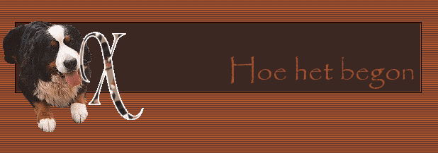

|
|
| 
|
|
De gedachte om een hond aan te schaffen werd jaren geleden al snel een regelmatig gespreksonderwerp. Maar omdat wij op een appartement woonden, was het toch wel moeilijk: mijn man en ik werkten beiden van 's morgens tot 's avonds laat. Dus konden we een hond niet de nodige aandacht geven dat zo'n beestje wel verdient. Maar na enige tijd hebben we een huis met tuin gekocht. Het idee om een hond aan te schaffen begon toen echt meer en meer vorm aan te nemen. We wisten beiden dat het hebben van een hond veel van onze tijd zou opslorpen. Dit werd nu uiteindelijk mogelijk. Bij het veranderen van onze tuin werden al voorzieningen getroffen om het dier een mooie ren te geven. Natuurlijk stelden wij ons de vraag: welke hond? Ikzelf was voorstander om een 'groot' dier in huis te halen. Of je nu een kleine hond of een grote hond neemt: je moet er voor zorgen, je moet er tijd in steken om een gelukkig en tevreden huisdier te hebben. Voor mij was het eigenlijk een uitgemaakte zaak dat het een 'groot' dier zou worden, dan besef je tenvolle waarom je zoveel opgeeft (tijd, uitstapjes, vakantie, ...). Voor een kleine hond leek me dit niet zo evident om de uren die ik thuis was voor een klein hondje te zorgen. Een kennis van mijn echtgenoot, Freddy, had een Berner Sennenhond. Tijdens een bezoekje daar werd het onmiddellijk een feit: het zou en moest een Berner Sennen worden. Titus (die ondertussen overleden is op de leeftijd van 5 jaar) had ons hart veroverd. We hadden nog meer geluk: de schoonvader van Freddy, Julien, was een fokker uit de duizend. Hij verzorgde zijn Berner Sennenhonden gewoon uitstekend. Maar toch hebben we nog op een volgende worp van Quella gewacht. We wilden alles prima in orde hebben én we wilden nestkeuze hebben. In 1997 was het zover: Quella zou proberen om opnieuw zwanger te worden. We waren druk bezig om een naam te zoeken voor onze reu: het zou Vigor worden! Maar Quella werd wat later zwanger, wat inhield dat ze in 1998 moeder zou worden. Op 22 april 1998 bracht zij 11 puppies ter wereld. Dus wij zochten nu naar een naam die begon met een W. Het werd na lang nadenken: Wigor. Ieder jaar moet de voornaam van de Berner Sennen met een andere voorletter beginnen. En de moeder van onze Xasha is nu ondertussen ook al in de hondenhemel.
Doch we werden
snel ontnuchterd toen
we onze keuze gingen maken bij Julien: |
|
|
Gelieve niets van deze website over te nemen of te claimen als je eigen.
Al deze teksten zijn © van mezelf, of zijn hier geplaatst met toestemming van de schrijver.
Laatst bijgewerkt op september 2005
Webdesign en mail to: Hedera Design